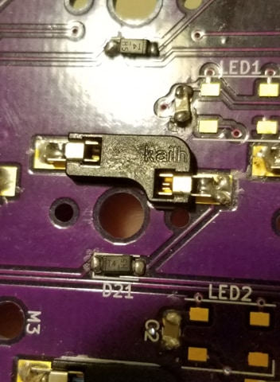

eng/YamPAD++
YEAH, it's an AUTOMATED MECHANICAL numPAD

Overview:
Inspired by the technology of player pianos, this self-typing keyboard is able to receive and recognize a string of commands, such as a password via loaded text file, and enter it on its own via a series of controlled servo motors while still remaining fully functional as a standard keyboard. The purpose of this project is to help people, such as senior citizens and people who did not grow up typing in general, who are less comfortable typing and have trouble memorizing various passwords to more easily access their virtual accounts while also addressing other common medical conditions such as arthritis and carpal tunnel syndrome.
The system is built on Mattia Dal Ben's famous YamPAD with added automated control and additional documentation on troubleshooting for those who are new to QMK Firmware.
Technical Objectives:
As a 10-week-long independent project, the YamPAD++ first needed some direction. The original proposed learning objectives of this project were:
* Computer vision
* Dot matrix computation and design
* Mechatronics
These hopes and dreams for all that it would become were divided into three categories of goals.
Fallback goals:
* Fully automatable custom mechanical keypad/keyboard
(keys can be “self-pressed”)
* Computer vision solution recognizes numerical values
Core goals:
* Computer vision solution recognizes alphanumeric values
* Keys signal when pressed (light up)
Reach goals:
* Computer vision solution increased recognition accuracy (80%?)
* Computer vision solution recognizes certain special characters
* Keyboard output registers on computer
* Other forms of input accepted (voice, text file, etc?)
Hardware and Construction:
This mechatronics project requires a variety of parts that can be organized into subsystems of the overarching project.
Case:
* 12" x 12" x 3/8" Acrylic Sheet
* 12" x 12" x 1/4" Acrylic Sheet
* 12" x 12" x 1/8" Acrylic Sheet
* 6-32 x 2" Phillips Drive Flat Head Machine Screws (5x)
* 6-32 Machine Screw Nuts (x15)
* M2-0.4 x 12 mm DIN 912 Hex Drive Class 12.9 Socket Head Screws (x10)
* M2-0.4 DIN 934 Class 8 Hex Nuts (x 10)
* Binder clips, small (x3)
* Mounting tape
Electronics:
* TowerPro RC 5V Servo Motor (x5)
* Pro Micro - 5V/16MHz
* 0.91" OLED Module 128X32 LCD LED Display Module IIC
* XM electronic
* please see link in README.md for details
* YamPAD PCB
* 1N4148W-13-F Diodes, SMD (18pcs)
* Multilayer Ceramic Capacitors MLCC - SMD/SMT 16V .1uF X5R 0805 10% (9pc)
* AA Battery Holder
* MX Kailh Sockets (18pcs)
* Mini Maestro 12-Channel USB Servo Controller
* Assorted jumper wires
Key Switches:
* Cherry MX Red Linear Platemounted Keyswitch (10 pack) (x2)
* KIT21 (purple) DSA Blank Keycaps 1U (10pcs)
* KIT17 (white) DSA Blank Keycaps 1U (10pcs)
* Note: more servos can be added for the control of other keys, but this project focused on numerical keys for simplicity
The construction of this project utilizes laser cutting, milling, and a little bit of work on the band saw.
SVG files were made using the dimensions from mattdibi's original case models. The laser cut design requires less material and is more efficient to construct due to the greatly increased depth of the project to account for the servos below. It also allows for the user to adjust the servo to key switch connections easily (and it's pretty cool to see the whole thing in action). The design files can be found here
Another major design decision was to use servo motors rather than the original idea to use solenoids. This is because, while servos take up more room, a servo motor has more precise control and can control more than one key on its own (in this case, each servo controls 2 keys).
Challenges and Solutions:
As with any mechatronics project, there were a good deal of challenges along the way. However the two most significant were the QMK Firmware learning curve, the mechatronics troubleshooting of real-life systems, and the unreliability of the strings.
Firmware challenge:
The firmware challenge was mostly due to my inexperience with custom keyboards in the past. Although the tutorial online (as mentioned in the README) was thorough, the source did not specifically support the yampad and adjustments had to be made accordingly.
However, troubleshooting what was helpful in learning more about QMK_Firmware, as it required reading through files and documentation, which isn't often written simply for new learners. Unsurprisingly, the biggest help came from a thread on the original yampad repository.
Troubleshooting challenge:
Much like the firmware challenge, a amount of time was spent attempting to debut the board, as only certain keys would respond in the beginning. This resulted in less obvious mistakes that required W. Strong's assistance to fix.
This being the first time I tried my hand at SMD soldering (and without tweezers) resulted in some messy connections. If certain keys don't work, a list of possible solutions are as follows:
1. Check each connection under a microscope and/or with a multimeter. The diodes in particular were prone to small errors.
2. Check each diode to make sure they are facing the correct way (as current only flows in one direction). The letter and number on the diode should be facing upwards, towards the connected socket:

3. If after testing each key, it is determined that all should be working, but no numbers are being output, this may be due to numlock being off. For LINUX users, this can be solved by installing numlockx. You can then toggle numlock on with the command, numlockx on.
Hardware challenge:
The strings were a way to save some vertical space in the keyboard, as it is already sitting at over 2" high, and to simplify the control of a group of actuators. Fortunately, this second issue became irrelevant with the introduction of the Pololu Maestro to the makeup. Unfortunately, the strings still posed a slight problem, as they tended to shift around and were thin enough to snap on occasion.
While tying the strings to the servos was the most secure, it was difficult to measure out and control precise distances when tying knots in thin threads. Adhesives such as tape and hot glue were also considered, but were eventually decided against for various reasons such as its unreliability (tape) and the permanence of the hot glue. Instead, it was decided to use binder clips to hold the strings in place due to their strong clamping force (which fits nicely on the servo mount plate) and their inconspicuous appearance when the tabs are folded down onto the servo plate. They also allowed the user to quickly and easily adjust the strings' positioning, which also made it easier to troubleshoot.
Results:
Although the resulting keyboard jumped around a bit in terms of goal completion, it is able to read an input "password" and actuate the corresponding keys. It also works as a functioning independent (manual) numpad when the servos are stopped.
Acknowledgements:
A special shoutout to W Strong for all your help troubleshooting, your professional expertise, and for sharing your awesome stories with me (and for letting me use your fancy equipment!)
Thank you also to M Elwin for your constant guidance and for helping me to decide on what I wanted to focus on this quarter
Finally, thank you to M Dal Ben for sharing your work with the world and for your help flashing the boards


© 2020 by yours truly.
Brought to you fresh via BaptistBot.